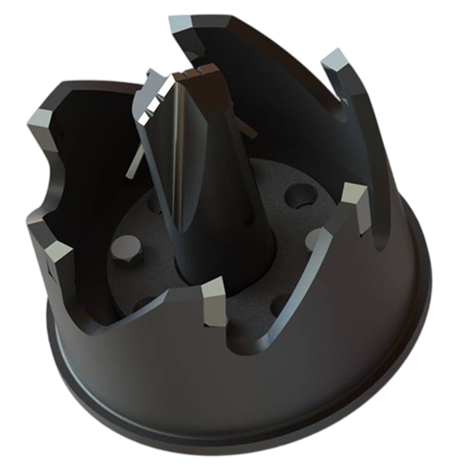
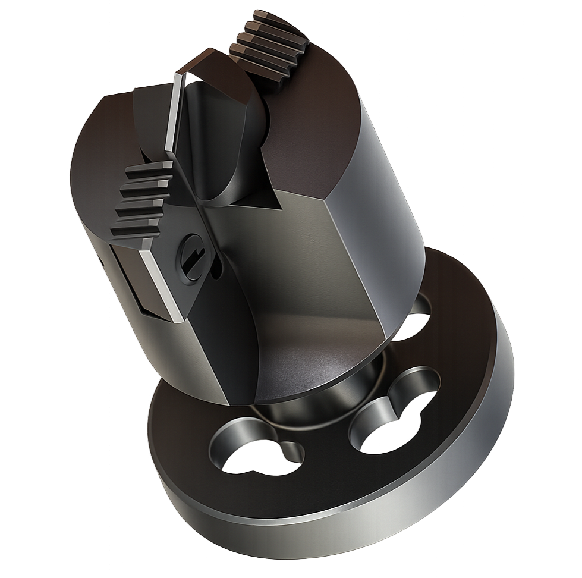

Hot Tapping Machine (Pressure Tapping Machine)
Hot tapping machines — 50mm, 150mm, 300mm
The "UKhV" hot tapping equipment makes new branch connections on live, pressurized pipelines — without interrupting flow or shutting the line down.
It taps in-service pipelines from 159 to 1220 mm carrying oil, gas, water and other media under pressure up to 6.3 MPa (up to 9.8 MPa in the UHV-150-01 version). The cut is made through a shut-off valve on the welded branch nozzle, so the line stays sealed and on-stream throughout — suitable for hazardous areas (Zone 2).
Contact us
Annular cutters
Расходник для УКхВ

Shell cutter & pilot drill
Расходник для УКхВ

Technical specifications
| Parameter | UHV-50 | UHV-150 | UHV-150-01 | UHV-300 |
|---|---|---|---|---|
| Tapped pipeline diameter, mm | 159–1220 | 325–1220 | 325–1220 | 530–1220 |
| Nominal bore of the welded-on branch nozzle, mm | 50 | 150 (100) | 100 | 300 (200) |
| Max pipe wall thickness, mm | 22 | 22 | 22 | 22 |
| Pipeline max working pressure, MPa (kgf/cm²) | 6.3 (64) | 6.3 (64) | 9.8 (100) | 6.3 (64) |
| Cutter / drill diameter, mm | 36 | 80 · 120 · 132 | 75 | 170 · 250 · 80 · 120 · 132 |
| Tool rotation speed, rpm | 33.21 | 49.82 | 49.82 | 49.82 |
| Tool feed, mm/rev | 0.078 | 0.062 | 0.062 | 0.062 |
| Spindle travel, min, mm | 425 | 685 | 685 | 970 |
| Working travel of tool when drilling, mm | 50 | 100 | 100 | 120 |
| Spindle rotation direction | Clockwise (right-hand) | Clockwise (right-hand) | ||
| Maximum hole drilling time, min | 20 | 40 | 40 | 39 |
| Electric motor power, kW | 1.1 | 2.2 | 2.2 | 3.0 |
| Electric motor rated speed, rpm | 1395 | 1395 | 1395 | 1395 |
| Motor explosion protection | 1ExdIIBT4 / 2ExdIICT4 | 1ExdIIBT4 / 2ExdIICT4 | ||
| Overall dimensions (L × W × H), mm | 750 × 670 × 275 | 1360 × 725 × 388 | 1360 × 725 × 388 | 1704 × 855 × 525 |
| Weight (excl. electrical), kg | 60 | 113 | 115 | 210 |
| Gearbox oil volume, l | 2.0 | 3.5 | 3.5 | 4.5 |
| Required shut-off valve (on the nozzle) | Wedge gate | Wedge gate | Flanged Ball | Wedge gate |
Explosion protection per GOST 22782.0 (≈ IEC 60079-0/-1); rated for hazardous areas Zone 2 (GOST R 51330.9 ≈ IEC 60079-10), gas categories IIA/IIB, temperature classes T1–T3 (GOST R 51330.5 / 51330.11 ≈ IEC 60079-20).
Tapping is performed through the shut-off valve on the welded branch nozzle, keeping the line sealed and on-stream throughout; alternative valves (lower PN, or a smaller DN with an adapter) may be used depending on line pressure. Supplied as a complete set: hot tapping device, a set of combination cutting tools (cutter + Ø28 mm pilot drill) and documentation.